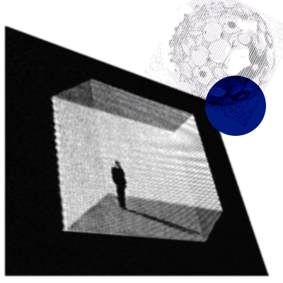
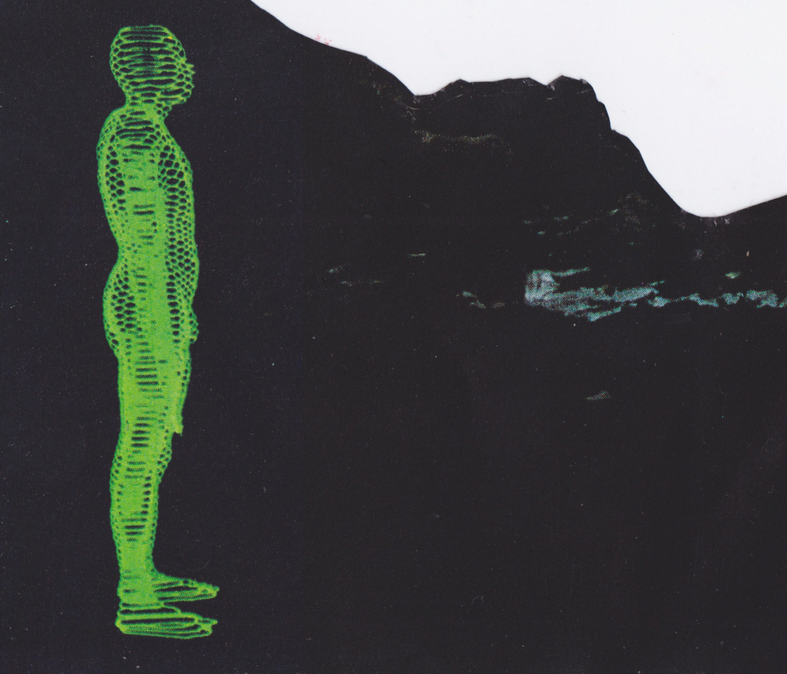

|

La existencia humana de alguna forma es limitada, desde las memorias, la búsqueda de la eternidad se hace presente: la negación de lo espiritual frente a lo que se desea. Mientras el mundo y su tecnología avanzan de forma exponencial, este secreto del querer ser eterno se refleja en los esfuerzos tecnológicos por prolongar la vida, siendo un buen ejemplo la carrera por descubrir curas de enfermedades, justamente el contexto pandémico nos revela como sin los avances de esta índole debemos quedarnos en casa pensando en que el tiempo pasa y no podemos alcanzarlo. Desde una contracultura (me refiero de esta manera ya que es poco ortodoxo para grupos conservadores apegados a la biología sin consideraciones de divergencia), la inteligencia es otra, una solución a el continuo dilema de la incomprendida creación de dios es el pensar en nuestra mente como un archivo eternamente modificable y virtual, entregar nuevas posibilidades |
coherentes a las necesidades propias y del medio habitable (insisto en el nuevo espacio virtual en el que habitamos en el contexto pandémico), la curiosidad y el querer nombrarlo todo es el comienzo cíclico de una nueva visión, la realidad tangible es una alternativa que implica asentamiento como distinción, sentidos, belleza, decisiones. Sin embargo hay que aceptar la fragilidad, reconocer es el acto del cual se desprende el avance del concepto y la extensión de la mente. El deseo de lo eterno puede resolverse con la simulación, el mundo ármonico y perfecto que todos quieren puede ser un viaje con copia de seguridad.  |